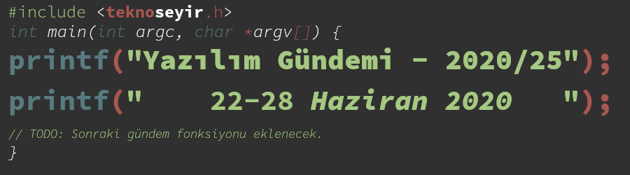
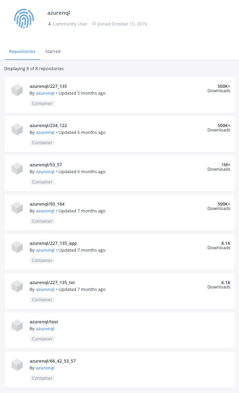
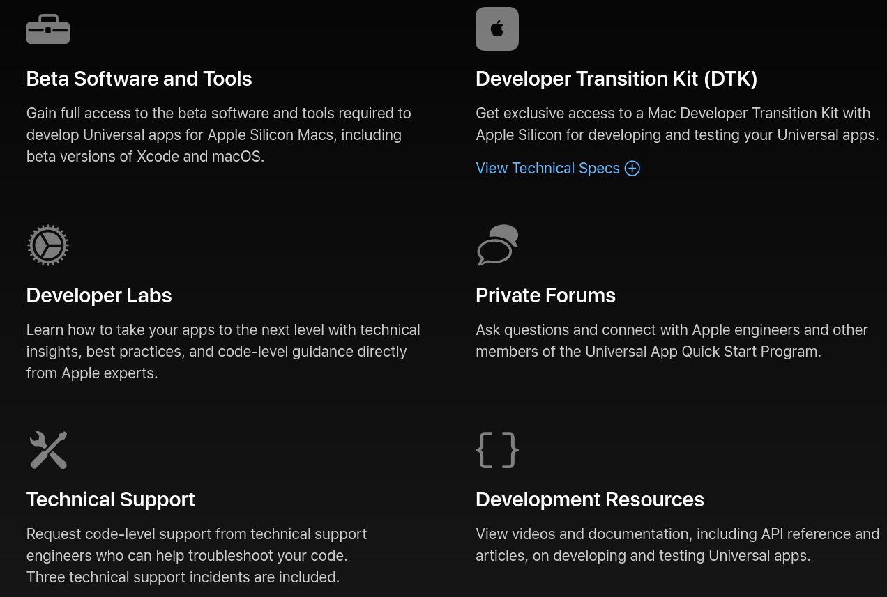
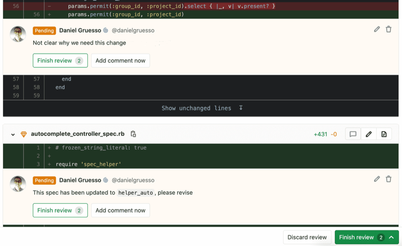
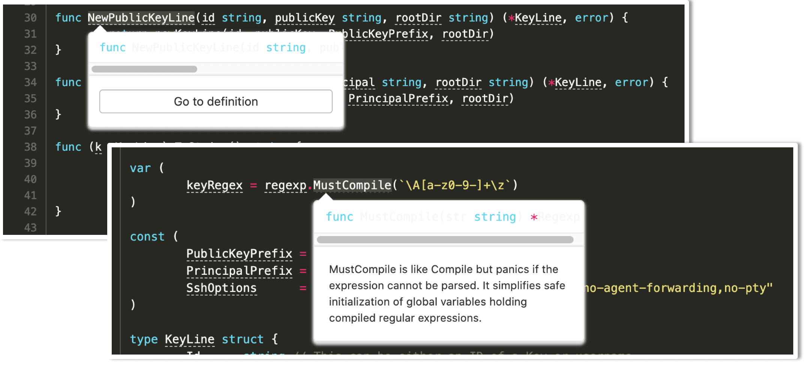
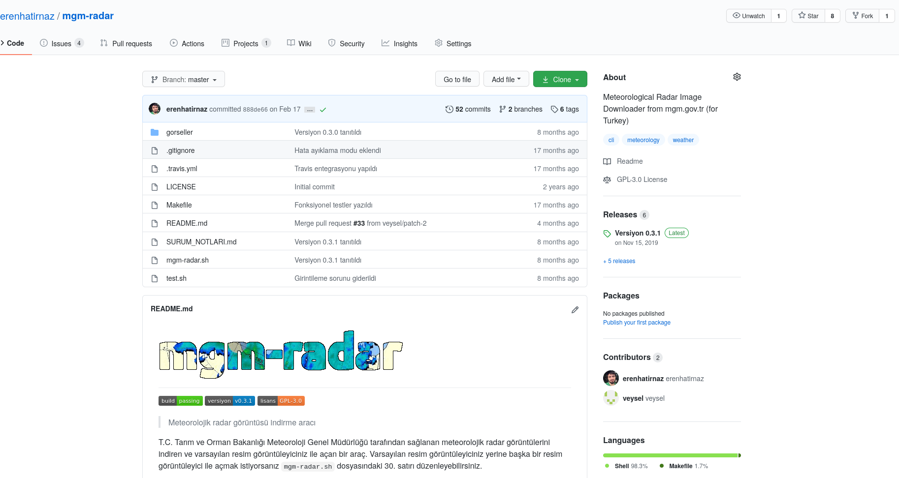

Yazılım Gündemi - 2020/25
22-28 Haziran 2020
İçindekiler
- 1. Container güvenliği ile ilgili gelişmeler: XORDDoS, Kaiji ve kripto para madenciliği
- 2. Apple WWDC20 etkinliğinde duyurulan bazı gelişmeler
- 3. GitLab 13.1 sürümü yayınlandı
- 4. GitHub ana sayfa ve depo sayfalarının tasarımını güncelledi
- 5. Python'a Pattern Matching özelliği eklenmesi için taslak öneri sunuldu
- 6. Angular 10.0.0 sürümü yayınlandı
- 7. Perl 7 sürümü duyuruldu
- 8. Yaklaşan Online Etkinlikler
- 9. Diğer Haberler
- 10. Lisans

< Önceki Gündem | 22-28 Haziran 2020 | Sonraki Gündem >
1 Container güvenliği ile ilgili gelişmeler: XORDDoS, Kaiji ve kripto para madenciliği
Container teknolojisinin yaygınlaşmasıyla birlikte güvenlik sorunlarının da ön plana çıktığını zaten yazılım gündemi yazılarında sürekli dile getiriyorum. Geçtiğimiz hafta ise yine Container teknolojisini hedef alan birçok güvenlik açığı ortaya çıkarıldı.
Bunlardan ilk ikisi Trend Micro güvenlik araştırmacıları tarafından ortaya
çıkarılan ve Docker sunucularını botnet ağına katarak DDoS saldırıları
gerçekleştirmeye yarayan XORDDoS (Backdoor.Linux.XORDDOS.AE) ve Kaiji DDoS
(DDoS.Linux.KAIJI.A) isimli zararlılar. XORDDoS zararlısı sistemdeki tüm
Docker konteynerlerini tarayıp kendini onlara enjekte ederken diğeri Kaiji ise
kendi zararlı docker konteynerlerini oluşturup, onları çalıştırıyor.
Dolayısıyla Kaiji'yi tespit etmek daha kolay. Eğer docker ps komutunu
çalıştırdıktan sonra çıkan listede tanımadığımız bir konteyner varsa onlardan
şüphelenebilirsiniz.
Geçtiğimiz hafta içinde ortaya çıkan bir diğer olay ise, Docker Hub platformundaki "azurenql" isimli kullanıcının paylaştığı Kripto para madenciliği için kullanılan Docker İmaj'ları. Kullanıcı adını Microsoft'un Azure bulut hizmetine benzetmiş ve bu sayede platforma yüklediği imajlar yüzlerce kez indirilmiş.

Şekil 2: "azurenql" isimli kullanıcının paylaştığı docker imajları
Paloalto Networks isimli firmanın altındaki Unit 42 güvenlik takımı bu imajları ortaya çıkardıktan sonra hepsi silinmiş ve ilgili Docker Hub kullanıcısı da sistemden atılmış. Fakat bu imajların yayınlandığı tarihten (Ekim 2019) bu yana ilgili kripto para cüzdanı için 36.000$'dan (525.38 XMR) fazla para madencilik yoluyla oluşturulmuş. Yani yapan kişi bayağı bir para kazanmış gözüküyor.
Bu haberdeki birçok güvenlik açığına yol açan sorun ise Docker'ı yönetmek için kullanılan port numarasının (2375) tüm internete açılmış olması. Kötü amaçlı kişiler interneti tarayarak bu açık portları yakalayıp, ilgili sistemlere girebiliyor. Dolayısıyla yapılması gereken ilk iş bu portu internete kapatmak. Daha sonra da sunucularınızda çalışan docker konteynerlerini kontrol etmek.
2 Apple WWDC20 etkinliğinde duyurulan bazı gelişmeler
Apple, geçtiğimiz hafta Pazartesi günü World Wide Developers Conference 2020 (WWDC20) etkinliğini gerçekleştirdi. Her ne kadar isminde "geliştiriciler" ifadesi geçse de Apple'ın daha çok son kullanıcılar için duyurular yaptığı bu etkinliğe damgasını vuran konu ise Apple'ın Mac sistemlerde Intel işlemcilerden kendi ARM tabanlı işlemcisine geçecek olması oldu. Daha çok son kullanıcıları ilgilen konular için TeknoSeyir'de yayınlanan Apple WWDC2 Değerlendirmesi videosunu izleyebilirsiniz. Ben bu yazıda daha çok geliştiricileri ilgilendiren bazı kısımlara değineceğim.
Öncelikle en baştan söylemek gerek ki Apple'ın bu ARM tabanlı kendi işlemcisine geçme işi hemen gerçekleşecek bir şey değil (teknik olarak mümkün olsa da pratikte sorunlar yaratır). Bu geçiş 2 yıllık bir süreçe yayılmış durumda. Bu geçiş süreci elbette bağımsız geliştiricilerin uygulamalarını ARM tabanına geçirmesini de içeriyor. Bu bağlamda Apple, geçtiğimiz hafta içerisinde Universal App Quick Start Program'ını duyurdu.

Şekil 3: Programın içeriği: Beta yazılım ve araçlara erişim, Geliştirici Geçiş Kiti (Donanım), Developer Labs, özel forumlar, teknik destek ve geliştirme için dokümantasyonlar
Yalnız bu programa başvurmak ücretsiz değil. Apple yukarıdaki hizmetler için geliştiricilerden 500 Dolar talep ediyor ve henüz ülkemizden sipariş edilemiyor. Donanımsal bir değişim olduğu için elbette Apple, bu programa başvuran kişi ve firmalara ARM tabanlı, geliştirme için kullanılabilecek bir kit sistemi de veriyor. Tabii ki program tamamlandığında geri verilmesi kaydıyla.
Bu yılın sonunda ve 2021'in başında ilk ARM tabanlı ürünleri çıkarmaya başlayacaklar fakat tabii ki bu süre zarfında tüm geliştiricilerin ARM tabanına geçmesi mümkün değil. İşte bu sorunu çözmek adına Apple, geçmişte de PowerPC'den Intel'e geçerken kullandığı Rosetta emülatörünü tekrar canlandırıp Rosetta 2 ismiyle işletim sisteminin içine gömecek. Yüklediğiniz bir uygulama eğer x86_64 mimarisi komutlarını barındırıyorsa bu uygulama otomatik olarak tanınacak ve Rosetta 2 emülatörü ile ARM tabanına dönüştürülüp, çalıştırılacak. Native ARM tabanlı uygulama kadar performanslı olamayacağı söylense de bunun zaten geçiş süreci içerisinde kullanılacak bir ara çözüm olduğu düşünülünce pek sıkıntı çıkaracağını düşünmüyorum. Yalnız bunun da birkaç kısıtlaması mevcut: JIT (Just-in-time) derleyicisi içeren uygulamalar, Kernel eklentileri ve sanal makine uygulamalarını ARM tabanına dönüştüremiyor. Bu da demek oluyor ki WMWare vb. yazılımların şu anki halleriyle orada çalışamayacak. Elbette ilgili firmalar ARM tabanlı sistemler için sanallaştırma çözümlerini geliştireceklerdir ileriki zamanlarda.
Benim önüme düşen bir diğer yenilik ise iOS tarafında: App Clips. Artık kullanıcılarımıza uygulamamızın tamamını yüklemeden sadece küçük bir parçasını kullandırabileceğiz. Bu küçük parça uygulama da işi bitince kullanıcıya uygulamanın tam halini yüklemesi de tabii ki teklif ediliyor. Yani bir nevi demo sunabileceğiniz kullanıcılara.
Apple'ın mobil cihazlarındaki uygulama marketinin işleyişiyle ilgili de bir değişiklik söz konusu. Artık geliştiriciler App Store kurallarını ihlal ettiği durumlarda Apple'a itiraz edebilecekler. Apple da bu süre zarfında kullanıcıların hatalardan mağdur olmaması için geliştiriciye hata giderme güncellemelerini yayınlama izini verecek.
Konferansı canlı olarak izlemedim. Sadece takip ettiğim kaynaklardan önüme düşen haberlere göz atıp değerlendirmelerimi yaptım. Haliyle duyurulan her konuya yer verememiş olabilirim. Eğer bu konferansta duyurulan ve geliştiricileri ilgilendiren başka konular biliyorsanız yorumlar bölümünde dile getirebilirsiniz.
3 GitLab 13.1 sürümü yayınlandı
GitLab, geçtiğimiz hafta içerisinde 13.1 sürümünü yayınladı. Bu sürümden gözüme çarpan bazı yenilik ve değişiklikler ise şu şekilde:
3.1 Merge Request Reviews artık herkese açık

İlk olarak GitLab 11.4 sürümüyle birlikte GitLab Premium özelliği olarak sunulan bu özellik artık herkesin kullanımına açıldı. Artık bir merge request'i review ederken birden çok yorumu tek seferde yazıp gönderebileceksiniz. Böylece karşı tarafın e-posta kutusu da birden çok maille dolmamış olacak.
3.2 Değiştirilen dosyalar için testleri önceliklendirme
Büyük projelerde kod yazarken en can sıkıcı şeylerden biri de kodunuzu uzak git sunucusuna gönderdiğiniz çalışan CI/CD süreçlerinin sonuçlanmasını beklemek. Bazen yeni yazdığınız bir testin geçemediğiniz görmeniz için çok uzun süreler beklemeniz gerekebiliyor. İşte GitLab da tam bu soruna çözüm getirmiş ve eğer bir test dosyasında değişiklik yapılmışsa o dosyadaki testleri daha önce çalıştırıyor ve sonuçlarını gösteriyor. Böylece vakit kazanmış oluyorsunuz. Yalnız bu özellik henüz ücretsiz sürümde mevcut değil.
3.3 Code Intelligence

GitLab ve Sourcegraph partnerliğiyle ortaya çıkan bu özellikle birlikte artık GitLab'ın Web IDE'sinde kodlarda gezinirken bir fonksiyonun üzerine geldiğimizde onun dokümantasyon bilgilerini görebileceğiz ve istersek tanımlandığı dosyayı açabileceğiz. Ayrıca bu sürümle birlikte Web IDE'ye EditorConfig desteği de gelmiş. Bugüne kadar olmaması şaşırttı beni.
İlgili sürüm notları sayfası epeyce bir uzun hepsine göz atamadım fakat baktıklarım ve GitLab'ın kendi öne çıkardıkları içerisinde gözüme çarpanları aktarmak istedim. Diğer gelişmeler ve değişiklikler için konu başlığına eklediğim bağlantıya tıklayabilirsiniz.
4 GitHub ana sayfa ve depo sayfalarının tasarımını güncelledi
Aslında bir önceki gündem yazısında değerlendirecektim bu konuyu ama GitHub ile ilgili iki tane önemli gelişme verken bir GitHub haberi daha eklemek hem çeşitliliği azaltacaktı hem de bir hafta önce bu değişiklik henüz beta aşamasındaydı. Bu hafta ise artık beta'dan çıkmış ve resmi olarak duyurulmuş durumda.

Şekil 6: GitHub'ın yeni depo sayfası tasarımı.
Görülebildiği gibi profil resimleri dahil tüm elemanlara kenar yuvarlatma işlemi uygulanmış. Ayrıca ikonlar da değiştirilmiş. Benim henüz alışamadığım bir değişiklik de eskiden üst kısımda olan kısa depo açıklaması, versiyon bilgileri, kullanılan programlama dilleri gibi görselliklerin sağ tarafa taşınmış olması oldu. Bir depo sayfasına girdiğimde istemsiz olarak ilk üst kısma bakıyorum, bulamayınca yana bakıyorum. Buna alışabilirim bir süre sonra ama hâlâ daha karanlık tema özelliğinin gelmemiş olmasına ne alışabiliyorum, ne de tahammül edemiyorum. Gerçekten anlamakta zorlanıyorum. Geliştiriciler için hazırlanmamış birçok sitede bile bu özellik varken GitHub gibi çoğunlukla bizim kullandığımız ve geceleri aktif olduğumuz bir platformun karanlık tema özelliğin olmaması nereden bakarsanız bakın saçmalıktır! Beta süresindeyken geri bildirim olarak göndermiştim fakat dikkate alınmamış demek ki. GitHub'dan biraz soğumaya başladım ne yalan söyleyeyim.
Yeni tasarım hakkında siz ne düşünüyorsunuz? Alışabildiniz mi yoksa siz de benim gibi elemanların eski tasarımdaki yerlerine hala bakanlardan mısınız? Karanlık temasının hala daha gelmemiş olmasına kaç rezalet puanı verirsiniz? Yorumlar bölümünde konuşalım.
5 Python'a Pattern Matching özelliği eklenmesi için taslak öneri sunuldu
Geçtiğimiz hafta içerisinde yayınlanan taslak öneri dokümanıyla birlikte eğer öneri kabul edilirse artık Python'da şu bir söz dizimi (syntax) yazmak mümkün olacak:
match degisken:
case 0 | 1 | 2:
print("Küçük sayı")
case [] | [_]:
print("Kısa bir dizi")
case str():
print("String bir ifade")
case _:
print("Başka bir şeyler")
Türkçe'ye örüntü tanıma ya da desen tanıma olarak çevirirsek yanlış olmaz sanırım. Bu özellikle birlikte gördüğünüz gibi birden çok sorgulama ifadesini tek bir değişken için çalıştırabileceğiz. Python'da diğer birçok dilde olan switch/case yapısının olmaması da düşünüldüğünde bence böyle bir özelliğe günümüzde ihtiyaç var.
Daha önce de bir tane dilin yaratıcısı tarafından olmak üzere 2 kez denenmiş bu özelliğin eklenmesi fakat kabul edilmemiş (bkz: PEP 275) (bkz: PEP 3103). Bakalım bu seferki denemenin sonucu ne olacak? Hep birlikte göreceğiz.
6 Angular 10.0.0 sürümü yayınlandı
Eskilerin popüler ön yüz geliştirme frameworklerinden biri olan Angular geliştirilmeye devam ediyor. Geçtiğimiz hafta yayınlanan 10.0.0 sürümüyle birlikte gelen bazı özellik ve değişiklikler ise şu şekilde:
Şekil 7: Bu sürümle birlikte eklenen yeni tarih aralığı seçme aracı
Yeni Date Range Picker elemanını mat-date-range-input ve
mat-date-range-picker komponentleriyle birlikte kullanabilirsiniz. Daha
fazla detay için bu sayfayı ziyaret edebilirsiniz.
Ayrıca bu sürümle birlikte opsiyonel olarak "strict" mod özelliği de gelmiş
durumda. Yeni bir proje oluştururken ng new --strict komutunu kullanırsanız
bu modun aktif olduğu bir proje yaratabilirsiniz.
Angular'ın geliştirilmesi için kullanılan teknolojilerin sürümleri de yükseltilmiş. Bunlar arasında TypeScript 3.9 sürümüne geçiş, TSLib ve TSLint araçlarının güncellenmesi de var.
Bu sürümle birlikte gelen diğer özellik ve değişiklikler için konu başlığına eklediğim bağlantıya tıklayabilirsiniz. Eğer projenizi Angular 10 sürümüne yükseltmek istiyorsanız yükseltme rehberi için bu sayfayı ziyaret edebilirsiniz: https://update.angular.io/.
7 Perl 7 sürümü duyuruldu
Geçtiğimiz hafta düzenlenen Perl konferansında, Perl programlama dilinin yeni sürümü olan Perl 7 duyuruldu. Fakat düşündüğünüz gibi büyük kod değişiklikleri içeren bir sürüm değil, daha çok Perl 5'in daha modern varsayılan ayarlarla birlikte gelen hali gibi düşünebilirsiniz. Tabii ki ileride büyük kod değişiklikleri içeren major sürümler de gelecek.
Konuyla ilgili YouTube videosu
Bu aynı zamanda demek oluyor ki Perl 6 sürümü hiçbir zaman olmayacak. Bana PHP 5'den PHP 7'ye geçişi hatırlattı bu durum. İlginç bir bilgi: PHP 6 etiketli bir sürüm olmamasına rağmen Türkiye'de bir yayınevi bu isimde kitap basmıştır :).
8 Yaklaşan Online Etkinlikler
9 Diğer Haberler
- İngiltere Ulusal Siber Güvenlik Merkezi: "Parola yapıştırmaya izin verin"
- Unity Learn Premium herkes için ücretsiz oldu.
- AWS, kod yazmadan uygulama geliştirme çözümünü beta olarak tanıttı: Amazon Honeycode.
- HashiCorp Cloud Platform tanıtıldı.
- Snapchat geliştiriciler için ücretsiz telefon doğrulama hizmetini tanıttı.
- GitHub Enterpise Server 2.21 sürümü yayınlandı.
- dotnet-monitor projesi tanıtıldı.
- Windows 10 ARM için OpenJDK duyuruldu.
- PHPStorm 2020.1.3 Preview sürümü yayınlandı.
- PHP 8.0.0 Alpha 1 sürümü yayınlandı.
- TypeScript 4.0 Beta sürümü yayınlandı.
- Flutter takımı, geliştiriciler için yeni araçlar yayınladılar.
- Deno v1.1.2 sürümü yayınlandı.
- Hasura Cloud tanıtıldı.
- Haskell için web geliştirme framewürk'ü tanıtıldı: IHP. YouTube Tanıtım Videosu
- OneDev 3.2 sürümü yayınlandı.
- Micronaut 2.0 sürümü yayınlandı.
- SQLDelight 1.4.0 sürümü yayınlandı.
- DVC 1.0 sürümü yayınlandı.
10 Lisans

Yazılım Gündemi - 2020/25 yazısı Eren Hatırnaz tarafından Creative Commons Atıf-GayriTicari-AynıLisanslaPaylaş 4.0 Uluslararası Lisansı (CC BY-NC-SA 4.0) ile lisanslanmıştır.